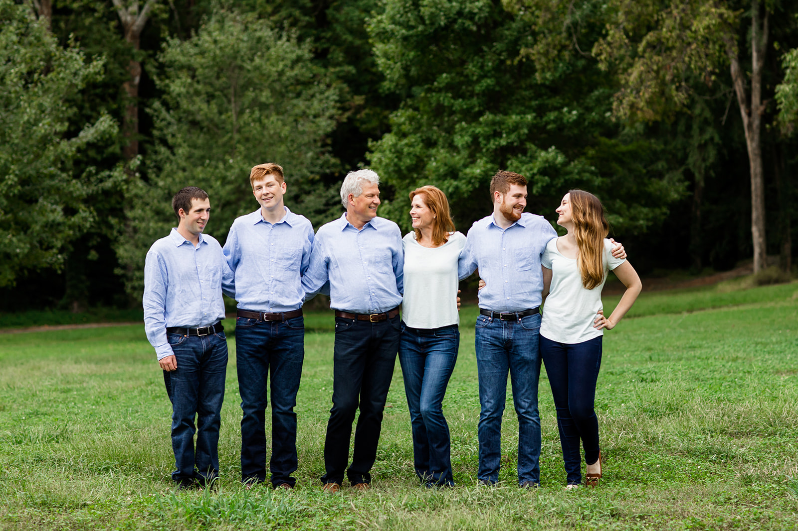

Target Audience
The target audience are local business owners and familes who are part of the Kempton Park community. Our goal is the foster a sense of community by having familes partisapating in the local events, which are supported by the locally owned business. We are hoping that as the community get to know the local business owners they will want to support these businesses and help them thrive, this will help our community thrive as a whole.
Local Buisnesses
Mark Evans, 53 years old, Profession: Farmer Selling produce at Williams Junction. Married for 30 years.
Family in Focus
This months Family in Focus is the Hatfield Family. Jason and Erin have been married for 27 years. They have lived in Perryvill for the last 15 Where they have raised their 4 children (Peter, Jeffery, Monica, Kent) and to become allstar atheletes in baseball, basket ball, football, and cross country running. Jason is the history teacher at Perryville High School while Erin has been a home maker always selling her wonderful pies for the 4H fund raisers.
Scenarios
- List of local buisnesses
- List of Local events
- Local school Honor Roll
- About our Mayor
- Become a Member